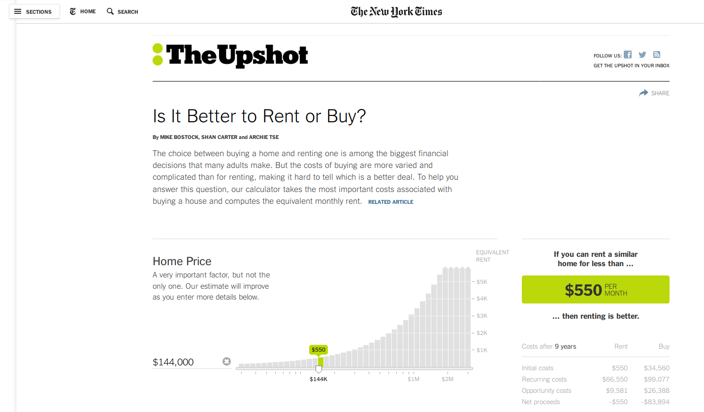
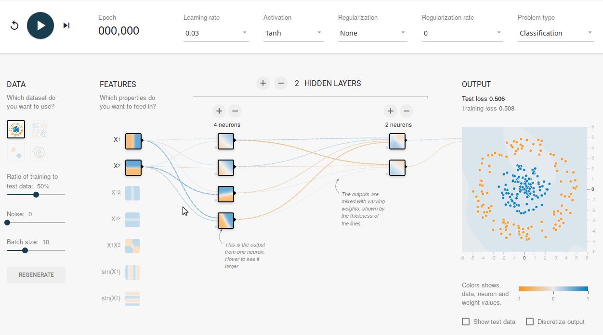
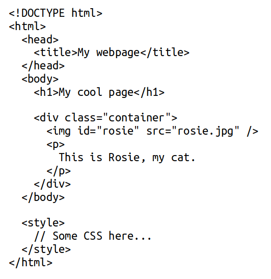
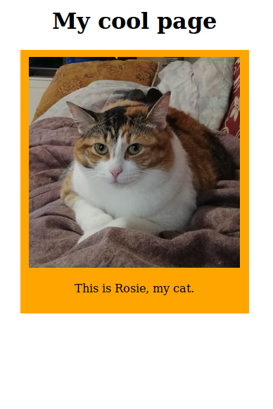

class: center, middle background-size: 100%; background-image: url(d3.png) count: false <div style="background-color:white; border: 2px solid black;"> <h1>D3.js: Tell your stories interactively</h1> <p>François Charih</p> <p>IEEE EMBS/CMBES Workshop Series</p> <p>February 6th, 2019</p> <p><b>Slides available here:</b> http://charih.ca/workshops/d3-workshop/presentation.html</p> </div> --- # What is D3.js? <div style="text-align:center;"> <img src="images/d3_logo.png" height="150px" /> </div> <p style="font-style:italic; font-size:1.2em;text-align:center;"> <span style="text-decoration:underline;">D</span>ata-<span style="text-decoration:underline;">D</span>riven <span style="text-decoration:underline;">D</span>ocuments </p> <p> D3.js is an open-source Javascript library that provides a <b>convenient interface</b> for <b>building data visualizations in the browser</b>. </p> <p> Created by <b>Mike Bostock</b>, a graphic designer at the <i>New York Times</i>. </p> -- <p style="margin-top:70px; font-size:1.3em; font-weight:bold; text-align:center;"> Why would I want to use D3.js? </p> --- # Tell your story the way you want it told <p style="width: 80%; font-size:0.8em; font-style:italic; margin:20px auto;"> We accumulate data that is larger in volume and complexity than ever before. Static plots are no longer enough to tell stories which are becoming increasingly complex. </p> -- <p> Traditional plotting software (MATLAB, matplotlib, seaborn, etc.) allows you to create visualizations quickly, but <i>leave little room for easy customization</i>. </p> -- <p> With D3.js, you build you visualizations from the ground up. D3.js is: <ul> <li>Simple and declarative</li> <li>Flexible: allows for interactivity, events, real-time plotting, etc.</li> <li>Compatible with modern web standards</li> <li>Modular</li> <li>Extremely well-documented by a gigantic community</li> </ul> </p> --- # D3.js in action: rent or buy? <div style="text-align:center; border: 3px solid black;"> <a href="https://www.nytimes.com/interactive/2014/upshot/buy-rent-calculator.html?rref=collection%2Fbyline%2Fmike-bostock&action=click&contentCollection=undefined®ion=stream&module=stream_unit&version=latest&contentPlacement=2&pgtype=collection" target="_blank">  </a> </div> <div style="text-align: center; font-size:0.7em;"> Visualization by Mike Bostock (D3.js creater/maintainer) </div> --- # D3.js: The neural network playground <div style="text-align:center; border: 3px solid black;"> <a href="https://playground.tensorflow.org" target="_blank">  </a> </div> <div style="text-align: center; font-size:0.7em;"> Neural Network Playground </div> --- # D3.js in action: OMG PARTICLES <p> In <a href="https://bl.ocks.org/mbostock/9539958" target="_blank">this example</a>, the center of the waves follows the cursor. </p> <div id="canvas1"></div> --- # The web trifecta <p> D3.js is a JS library; usage requires some basic knowledge about how webpages are structured/built. </p> <div style="text-align:center"> <svg xmlns:dc="http://purl.org/dc/elements/1.1/" xmlns:cc="http://creativecommons.org/ns#" xmlns:rdf="http://www.w3.org/1999/02/22-rdf-syntax-ns#" xmlns:svg="http://www.w3.org/2000/svg" xmlns="http://www.w3.org/2000/svg" id="svg8" version="1.1" viewBox="0 0 173.79108 152.6244" height="100mm" > <defs id="defs2" /> <metadata id="metadata5"> <rdf:RDF> <cc:Work rdf:about=""> <dc:format>image/svg+xml</dc:format> <dc:type rdf:resource="http://purl.org/dc/dcmitype/StillImage" /> <dc:title></dc:title> </cc:Work> </rdf:RDF> </metadata> <g transform="translate(-18.748809,-1.6505952)" id="layer1"> <circle r="22.692125" cy="27.880953" cx="105.07738" id="circle1" style="opacity:1;fill:none;fill-opacity:1;stroke:#000000;stroke-width:0.2728903;stroke-linejoin:round;stroke-miterlimit:4;stroke-dasharray:none;stroke-dashoffset:0;stroke-opacity:1" /> <circle style="opacity:1;fill:none;fill-opacity:1;stroke:#000000;stroke-width:0.2728903;stroke-linejoin:round;stroke-miterlimit:4;stroke-dasharray:none;stroke-dashoffset:0;stroke-opacity:1" id="circle2" cx="43.467262" cy="118.59524" r="22.692125" /> <circle r="22.692125" cy="118.59524" cx="166.6875" id="circle3" style="opacity:1;fill:none;fill-opacity:1;stroke:#000000;stroke-width:0.2728903;stroke-linejoin:round;stroke-miterlimit:4;stroke-dasharray:none;stroke-dashoffset:0;stroke-opacity:1" /> <path id="path821" d="M 51.40476,97.050594 90.714284,45.267856" style="fill:none;stroke:#000000;stroke-width:0.26458332px;stroke-linecap:butt;stroke-linejoin:miter;stroke-opacity:1" /> <path id="path823" d="m 120.19643,45.267856 33.2619,54.428571" style="fill:none;stroke:#000000;stroke-width:0.26458332px;stroke-linecap:butt;stroke-linejoin:miter;stroke-opacity:1" /> <text id="text827" y="24.985626" x="105.08791" style="font-style:normal;font-variant:normal;font-weight:normal;font-stretch:normal;font-size:9.10737801px;line-height:1.25;font-family:Lato;-inkscape-font-specification:Lato;letter-spacing:0px;word-spacing:0px;fill:#000000;fill-opacity:1;stroke:none;stroke-width:0.42690831" xml:space="preserve"><tspan style="font-style:normal;font-variant:normal;font-weight:normal;font-stretch:normal;font-family:'Gillius ADF';-inkscape-font-specification:'Gillius ADF';text-align:center;text-anchor:middle;stroke-width:0.42690831" y="24.985626" x="105.08791" id="tspan825">HTML</tspan><tspan id="tspan829" style="text-align:center;text-anchor:middle;stroke-width:0.42690831" y="36.870754" x="105.08791"><tspan id="tspan831" style="font-style:normal;font-variant:normal;font-weight:normal;font-stretch:normal;font-family:'Gillius ADF';-inkscape-font-specification:'Gillius ADF';text-align:center;text-anchor:middle;stroke-width:0.42690831">(content</tspan>)</tspan></text> <text xml:space="preserve" style="font-style:normal;font-variant:normal;font-weight:normal;font-stretch:normal;font-size:9.10737801px;line-height:1.25;font-family:Lato;-inkscape-font-specification:Lato;letter-spacing:0px;word-spacing:0px;fill:#000000;fill-opacity:1;stroke:none;stroke-width:0.42690831" x="43.099819" y="115.32194" id="text843"><tspan id="tspan837" x="43.099819" y="115.32194" style="font-style:normal;font-variant:normal;font-weight:normal;font-stretch:normal;font-family:'Gillius ADF';-inkscape-font-specification:'Gillius ADF';text-align:center;text-anchor:middle;stroke-width:0.42690831">CSS</tspan><tspan x="43.099819" y="127.20707" style="text-align:center;text-anchor:middle;stroke-width:0.42690831" id="tspan841"><tspan style="font-style:normal;font-variant:normal;font-weight:normal;font-stretch:normal;font-family:'Gillius ADF';-inkscape-font-specification:'Gillius ADF';text-align:center;text-anchor:middle;stroke-width:0.42690831" id="tspan839">(style</tspan>)</tspan></text> <text id="text851" y="115.32194" x="166.69803" style="font-style:normal;font-variant:normal;font-weight:normal;font-stretch:normal;font-size:9.10737801px;line-height:1.25;font-family:Lato;-inkscape-font-specification:Lato;letter-spacing:0px;word-spacing:0px;fill:#000000;fill-opacity:1;stroke:none;stroke-width:0.42690831" xml:space="preserve"><tspan style="font-style:normal;font-variant:normal;font-weight:normal;font-stretch:normal;font-family:'Gillius ADF';-inkscape-font-specification:'Gillius ADF';text-align:center;text-anchor:middle;stroke-width:0.42690831" y="115.32194" x="166.69803" id="tspan845">Javascript</tspan><tspan id="tspan849" style="text-align:center;text-anchor:middle;stroke-width:0.42690831" y="127.20707" x="166.69803"><tspan id="tspan847" style="font-style:normal;font-variant:normal;font-weight:normal;font-stretch:normal;font-family:'Gillius ADF';-inkscape-font-specification:'Gillius ADF';text-align:center;text-anchor:middle;stroke-width:0.42690831">(behavior</tspan>)</tspan></text> </g> </svg> </div> --- # HTML & CSS <p>The <i>Hypertext Markup Language</i> allows us to define the hierarchy of the content of a webpage. We refer to it as the <b>DOM Tree</b>. -- <div style="display: flex; justify-content:space-around;">   </div> --- # Javascript is awesome Javascript runs in virtually every browser: bust out the command line in your browser and you are set (not quite, but almost). -- Now, with Node.js, Javascript has become a scripting language, just like Python. <div style="text-align:center;"> <img style="height:100px;" src="https://cdn-images-1.medium.com/max/2000/1*zSyNQs8tbBU1sV3XABnhhg.png" /> </div> -- People now use Javascript as a general-purpose language to: <ul> <li>Write web servers (<a href="https://expressjs.com/" target="_blank">Express.js</a>)</li> <li>Create desktop applications (<a href="https://electronjs.org/" target="_blank">Electron</a>)</li> <li>Build web and mobile applications (<a href="https://facebook.github.io/react" target="_blank">React</a> and <a href="https://facebook.github.io/react-native/" target="_blank">React-Native</a>)</li> <li>Do machine learning (<a href="https://js.tensorflow.org/" target="_blank">Tensorflow.js</a>)</li> </ul> <div style="text-align:center;"> <b>IMPORTANT NOTE</b><br> Javascript has <a href="https://www.destroyallsoftware.com/talks/wat" target="_blank">its quirks</a>, so use it with caution. </div> --- # Javascript is everywhere <img src="https://static1.squarespace.com/static/58d20c79725e25b221549193/t/5acdf1b4f950b79e58555de1/1523446237428/?format=750w" /> --- # Javascript (ES6): the essentials ```javascript /* Declaring a variable */ var a = 0; const b = 1; let c = 2; a = 5; // OK b = 2; // ERROR c = 1; // OK /* Defining a function */ // Anonymous function (not useful on its own) function(param1, param2) { return param1 + param2 } // old JS (param1, param2) => param1 + param2 // ES6 (new JS) // Named function function add(param1, param2) { return param1 + param2; } /* Callbacks */ function addAndPrint(param1, param2, callback) { const sum = param1, param2; callback(sum); } addAndPrint(5, 7, function(sum) { console.log(sum) }) // (old JS) addAndPrint(5, 7, (sum) => console.log(sum)) // (new JS) ``` --- # Javascript <p> Javascript is a language that allows us to modify the DOM Tree dynamically: <ul> <li>Styling</li> <li>Event handling (click, buttons, sliders)</li> <li>Animations</li> </ul> </p> ```javascript var paragraphs = document.getElementsByTagName("p"); for (var i = 0; i < paragraphs.length; i++) { var paragraph = paragraphs.item(i) paragraph.style.setProperty("color", "red", null) } ``` <div style="text-align:center;">Changing font color to <span style="color:red;">red</span> in Javascript</div> --- # Javascript <p> Javascript is a language that allows us to modify the DOM Tree dynamically: <ul> <li>Styling</li> <li>Event handling (click, buttons, sliders)</li> <li>Animations</li> </ul> </p> ```javascript d3.selectAll("p").style("color", "red") ``` <div style="text-align:center;">Changing font color to <span style="color:red;">red</span> with D3.js</div> --- # Scalable vector graphics (SVG) <p> SVG is a "language" for vector-based graphics, as opposed to raster-based graphics. As such, it can be <b>scaled to arbitrary sizes without loss in quality</b>. </p> <p> SVG has a similar syntax to HTML, but defined geometric elements: <i>circles</i>, <i>rectangles</i>, <i>lines</i>, <i>paths</i>, <i>polylines</i>. </p> ```html <svg> <line x1="100" x2="100" y1="50" y2="100" stroke="black" stroke-width="4" /> <circle cx="350" cy="50" r="40" stroke="green" stroke-width="4" fill="blue" /> <polygon points="200,10 250,100 160,100" style="fill:transparent;stroke:red;" /> </svg> ``` <div> <svg style="border: 1px solid black;" width="100%" height="120px"> <line x1="100" x2="100" y1="50" y2="100" stroke="black" stroke-width="4" /> <circle cx="350" cy="50" r="40" stroke="green" stroke-width="4" fill="blue" /> <polygon points="200,10 250,100 160,100" style="fill:transparent;stroke:red;stroke-width:1" /> </svg> </div> --- # D3.js: drawing shapes Technically, you could make static plots using only SVG, but that may be tedious. For e.g., what if I want to make 12 circles? ```javascript /* Store the circle coordinates in an array */ var circleCenters = [] var OFFSET = 25 for(var i = 0; i < 12; i++){ circleCenters.push(i*50 + OFFSET) } // circleCenters = [25, 75, 125, ..., 575] /* Add the 12 circles to your canvas */ d3.select('[id="#12circles"]') // Select the canvas .selectAll(".circles") .data(circleCenters) .enter() .append('circle') // Create the circles .attr('r', 25) .attr('cy', 25) .attr('cx', function(pos, index) { return pos }) // Use the position bound to the circle .style('fill', 'blue') ``` <div style="margin: 20px auto; text-align: center;"> <svg style="height:50px; border: 2px solid black; width: 600px;" id="#12circles"> </svg> </div> --- # D3.js: drawing shapes Technically, you could make static plots using only SVG, but that may be tedious. For e.g., what if I want to make 12 circles? ```javascript /* Store the circle coordinates in an array */ var circleCenters = [] var OFFSET = 25 for(var i = 0; i < 12; i++){ circleCenters.push(i*50 + OFFSET) } // circleCenters = [25, 75, 125, ..., 575] /* Add the 12 circles to your canvas */ d3.select('[id="#12circles"]') // Select the canvas .selectAll(".circles") .data(circleCenters) .enter() .append('circle') // Create the circles .attr('r', 25) .attr('cy', 25) .attr('cx', function(pos, index) { return pos }) // Use the position bound to the circle .style('fill', function(pos, index) { return i % 2 == 0 ? 'blue' : 'red' }) ``` <div style="margin: 20px auto; text-align: center;"> <svg style="height:50px; border: 2px solid black; width: 600px;" id="#12circles2"> </svg> </div> --- # Exercise 1 Use the starter code provided <a href="https://codepen.io/fcharih/pen/VVrydE" target="_blank">here</a>, and modify it so that it: - The circles have the radii in the array - The circles are blue if the radius <= 30 and red otherwise Refer to the previous slides for a syntax reference. (HINT: Only 2 lines need a modification.) <div style="font-style:italic;">Before...</div> <div> <svg id="exercise1" height="100px" width="700px"/> </div> <div style="font-style:italic;">After...</div> <div> <svg id="exercise1_complete" height="200px" width="700px"/> </div> --- # D3.js: Handling mouse events One of the greatest strengths of D3.js is its ability to customize the behavior of SVG elements in a page. <div> <svg id="handling1" height="120px" width="700px"/> </div> ```javascript /* chain this code to the code from exercise 1*/ .on('mouseover', function (data, index) { d3.select('[id="handling1"]') .append('text') .attr('id', 'label') .text("This circle's radius is: " + data) .attr('x', 20) .attr('y', 120) }) .on('mouseout', function (data, index) { d3.select('#label') .remove() }) ``` --- # Exercise 2 Modify the <a href="https://codepen.io/fcharih/pen/EObQbO" target="_blank">code snippet</a> so that the circle's size increase by a factor of 1.2 on "mouseover", and returns to its original size following the "mouseout" event. Note: inside the "mouseover" and "mouseout" event, you can obtain the object corresponing to the target circle by selecting the `this` object with `d3.select(this)`. The result should look something like this: <div> <svg id="handling_exercise" height="120px" width="700px"/> </div> --- # Javascript Object Notation (JSON) .center[ <img width="40%" src="json.png" /> ] <div style="display: flex; align-items:center;"> <div style="width:50%;"> <p> JSON is a data interchange format. It allows us to <b>group and organize</b> data. </p> <p> A JSON document is simply a list of key-value pairs. </p> <pre> <code class="javascript hljs remark-code"> // Accessing a value var firstName = jsonObject.firstName; var age = jsonObject["age"]; </code> </pre> </div> <div style="width:50%;"> <pre> <code class="javascript hljs remark-code"> // A JSON object reprenting a person { "firstName": "John", "lastName": "Smith", "isAlive": true, "age": 27, "address": { "streetAddress": "21 2nd Street", }, "phoneNumbers": [ { "type": "home", "number": "212 555-1234" } ] } </code> </pre> </div> </div> --- # D3.js: working with scales and axes When dealing with data, you will typically want to position/scale the elements in a visualization based on their value: - Heights in a bar chart - Position in a box plot - etc. <div style="text-align: center;"> <svg id="scales_example" height="200px" width="700px"/> </div> .center[ Let's <a href="https://codepen.io/fcharih/pen/EOoNxQ" target="_blank">do it</a>. ] --- # D3.js: using paths to draw line charts Using the ```d3.scale``` function, D3.js can determine how and where to draw a path for your data. ```javascript var data = [{x:1, y:30}, {x:2, y:20}, {x:3, y:3}, {x:6, y:8}] // Code for creating scales go here var line = d3.line() .x(function(data) { return xScale(data.x) }) .y(function(data) { return yScale(data.y) }) var points = d3.select('#playground') .selectAll('.point') .data(data) .enter() .append('circle') .attr('cx', function(d) { return xScale(d.x) }) .attr('cy', function(d) { return yScale(d.y) }) .attr('r', 10) .style('fill', 'blue') var line = d3.select('#playground') .append('path') .datum(data) .attr('d', line) .style('fill', 'none') .style('stroke-width', 3) .style('stroke', 'blue') ``` --- # Customize your visualization to your liking Here are other examples of features that D3.js enables: - [Time-based visualizations](https://bost.ocks.org/mike/nations/) - [Drag and drop](https://bl.ocks.org/mbostock/22994cc97fefaeede0d861e6815a847e) - [Brushes](https://bl.ocks.org/mbostock/6498000) - [Transitions](http://bl.ocks.org/enjalot/1429426) - [Zooming](https://bl.ocks.org/mbostock/34f08d5e11952a80609169b7917d4172) --- # How I use D3.js in my research I have used D3.js extensively (at least 3-4 projects that have or are on track to be published): <ul> <li><a href="http://www.methylsight.com" target="_blank">MethylSight</a></li> <li>SAANS Annotation App (React-Native mobile application)</li> <li>Presentations (such as this one, see <a href="https://github.com/gnab/remark" target="_blank">Remark.js</a>)</li> </ul> --- # Live demo Let us consider a scenario where we were asked to build a visualization for the 2015 Canadian elections. We wish to allow the user to view the total vote per major party (PLC, CPC, NDP, Bloc Quebecois and Green Party). We are given the following: - The total number of votes per party per province - A JSON file containing the coordinates of all the provinces' borders .center[**Let's build this.**] --- class: center, middle <div style="font-size: 1.4em; text-align: center"> Boring and static plots do not do your research justice... </div> -- <div style="position: relative;" id="d3-pitch">Why not use D3.js?</div> --- class: center, middle .center[ Thank you! <img src="/workshops/d3-workshop/charih.png" /> <a href="mailto:francoischarih@sce.carleton.ca">francoischarih@sce.carleton.ca</a> Slides will be available at <a href="http://www.charih.ca">http://www.charih.ca</a>. ]